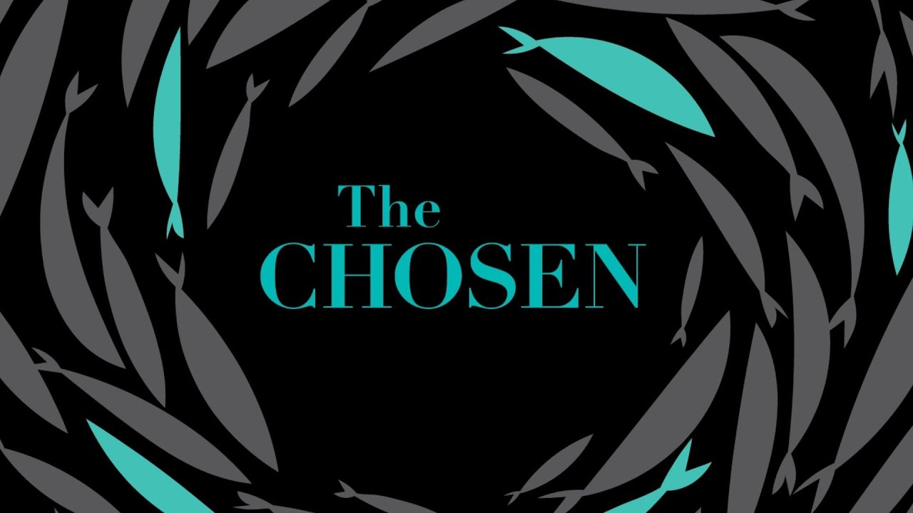

Jesus de Nazaré é um homem simples, filho de um carpinteiro, de família humilde, que, com a ajuda de seus 12 discípulos, procura, através de suas palavras e ações, compartilhar o bem e amparar os mais necessitados que encontra em suas jornadas.
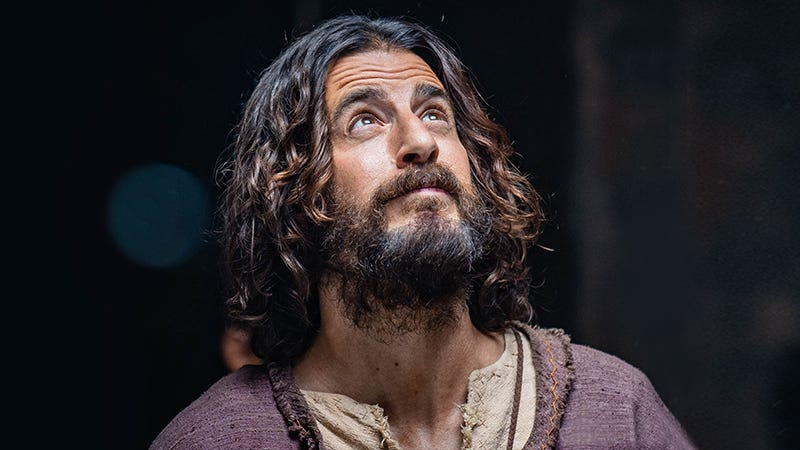
Emissoras Originais: Trinity Broadcasting Network, UPtv
Primeiro Episodio: 24 de dezembro 2017 (EUA)
Autores: Dallas Jenkins, Ryan Swanson, Tyler Thompson
Baseado em: Vida de Jesus
Personagem: Jesus Cristo
Ator: Jonathan Roumie
Idade: 51 anos
Nacionalidade: Norte Americano
Descrição: Endividado e com a carreira estagnada, ele se entregou totalmente a Deus e foi escolhido para representar Jesus na série The Chosen
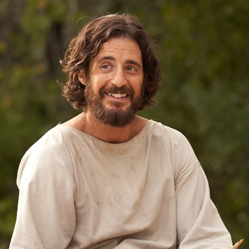
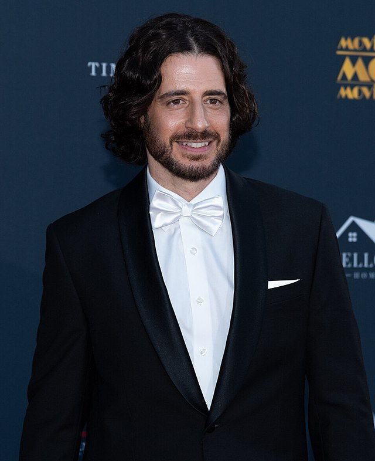
Filho de Deus Pai
Personagem: Maria Madalena
Ator: Elizabeth Tabish
Idade: 38 anos
Nacionalidade: Norte Americana
Descrição: É uma atriz americana e filmmaker, renomada por seu papel como Maria Madalena na aclamada Serie de TV "The Chosen(2017)".
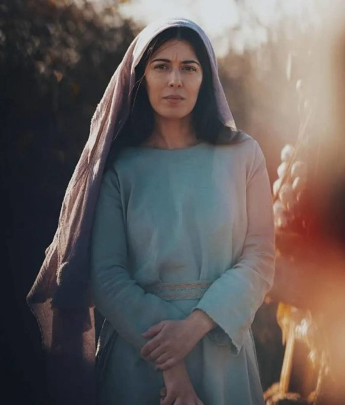
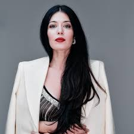
Primeira pessoa que conheceu Jesus
Personagem: Simão Pedro
Ator: Shahar Isaac
Idade: 31 anos
Nacionalidade: Norte Americano
Descrição: Shahar atuou em três séries conhecidas, sendo elas: Madam Secretary, Person of Interest, The Good Fight e The Chosen. Shahar participou de um filme chamado Price for Freedom.
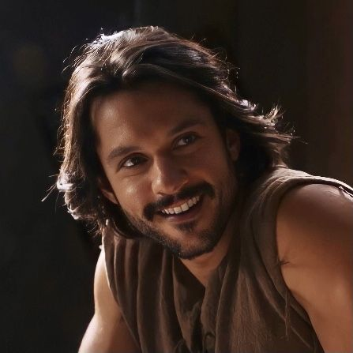
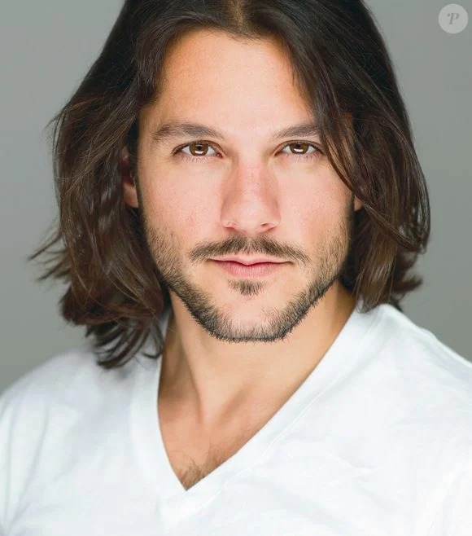
Melhor amigo de Jesus Cristo, recebeu a chave dos céus
Personagem: João
Ator: George H. Xanthis
Idade: 35 anos
Nacionalidade: Australiano
Descrição: Antes de The Chosen, Xanthis teve uma carreira diversificada, incluindo trabalhos no teatro e na televisão australiana. Ele ganhou um prêmio Webby em 2015 por seu papel em Syd2030 e foi indicado ao prêmio da Academia Australiana de Cinema e Televisão (AACTA) de Melhor Novo Talento por sua atuação em Open Slather de 2016.
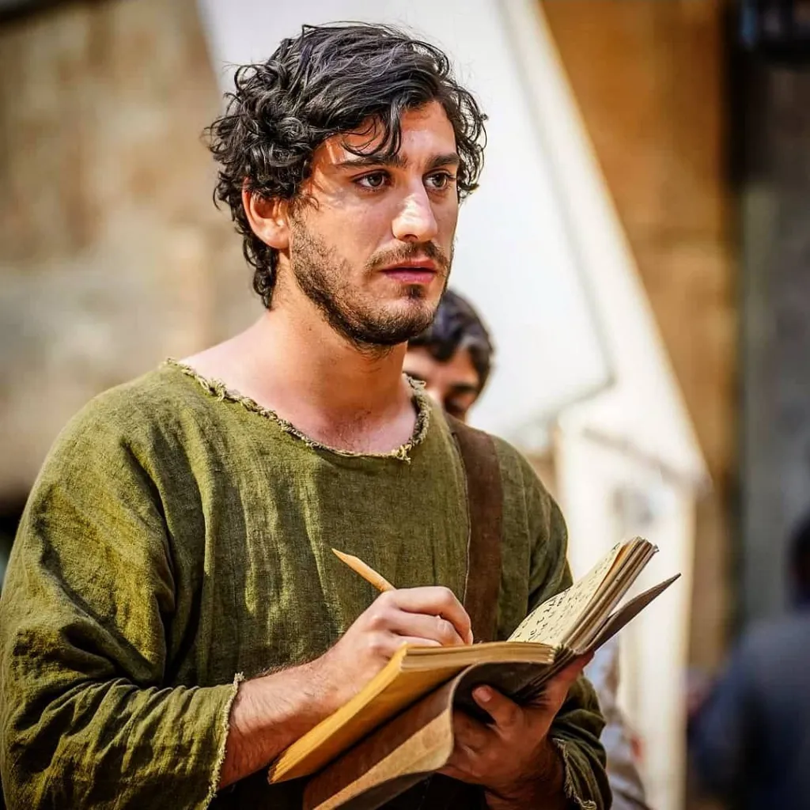
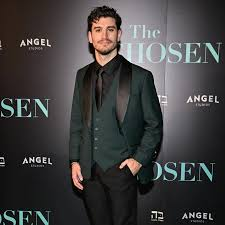
Discipulo Amado de Jesus Cristo
Personagem: André
Ator: Noah James
Idade: 35 anos
Nacionalidade: Norte Americano
Descrição: Noah James nasceu o 18 de maio de 1989 em Los Angeles, Califórnia, EUA. É ator e diretor, conhecido pelo seu trabalho em Os Escolhidos (2017), Shameless (2011) e Game Shakers (2015).
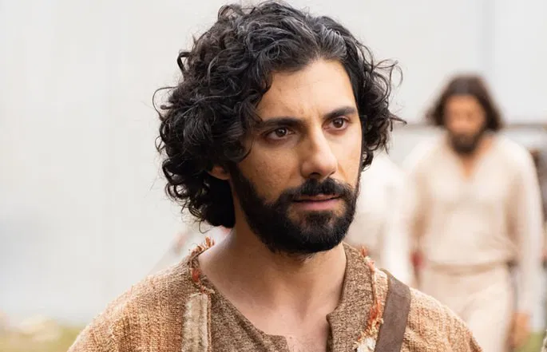
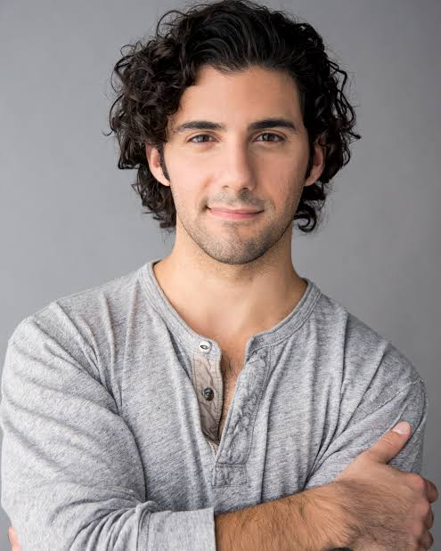
Primeiro discípulo a reconhecer Jesus
Personagem: Matheus
Ator: Paras Patel
Idade: 38 anos
Nacionalidade: Norte Americano
Descrição: Paras Patel é ator, conhecido pelo seu trabalho em Os Escolhidos (2017), Duff: Você Conhece, Tem ou É (2015) e Espírito Adolescente (2011).
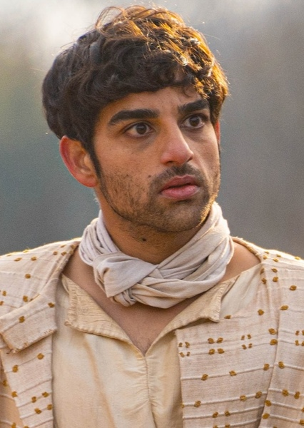
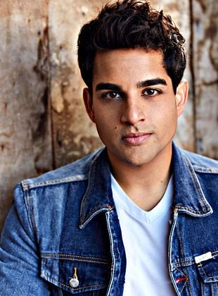
Era um cobrador de impostos, mas Jesus o transformou
Personagem: Tiago Maior
Ator: Abe Martell Jallad
Idade: 36 anos
Nacionalidade: Norte Americano
Descrição: Abe Bueno-Jallad nasceu em El Paso, Texas, EUA. É ator, conhecido pelo seu trabalho em Máquina Mortífera (2016), Transcendence: A Revolução (2014) e Good Girls Revolt (2015).
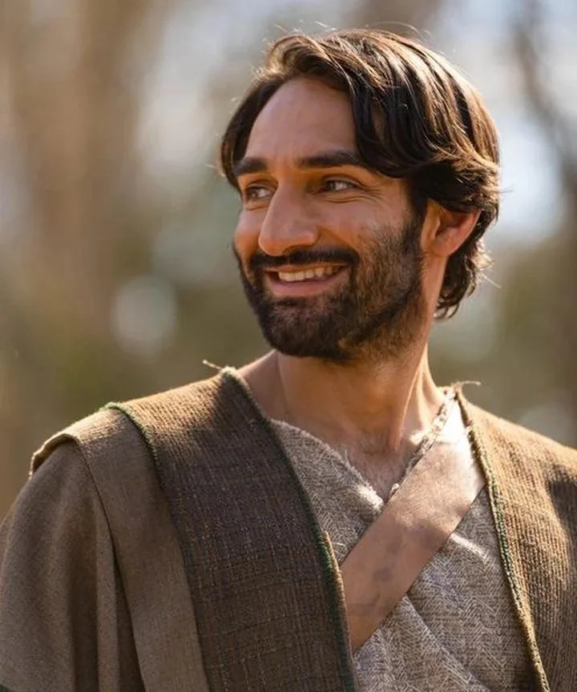
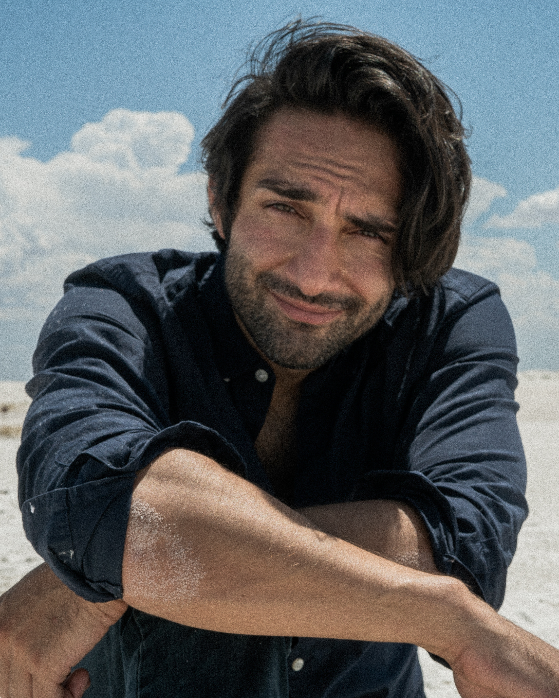
Irmão de João. Corajoso e direto. Junto com o irmão, forma os "Filhos do Trovão".
Personagem: Tiago Menor
Ator: Jordan Walker Ross
Idade: 35 anos
Nacionalidade: Norte Americano
Descrição: Jordan Walker Ross nasceu o 8 de fevereiro de 1990 em Arlington, Texas, EUA. É ator e autor, conhecido pelo seu trabalho em Os Escolhidos (2017), 1883 (2021) e Pantera Negra: Wakanda para Sempre (2022) É casado com Stacy Ross.
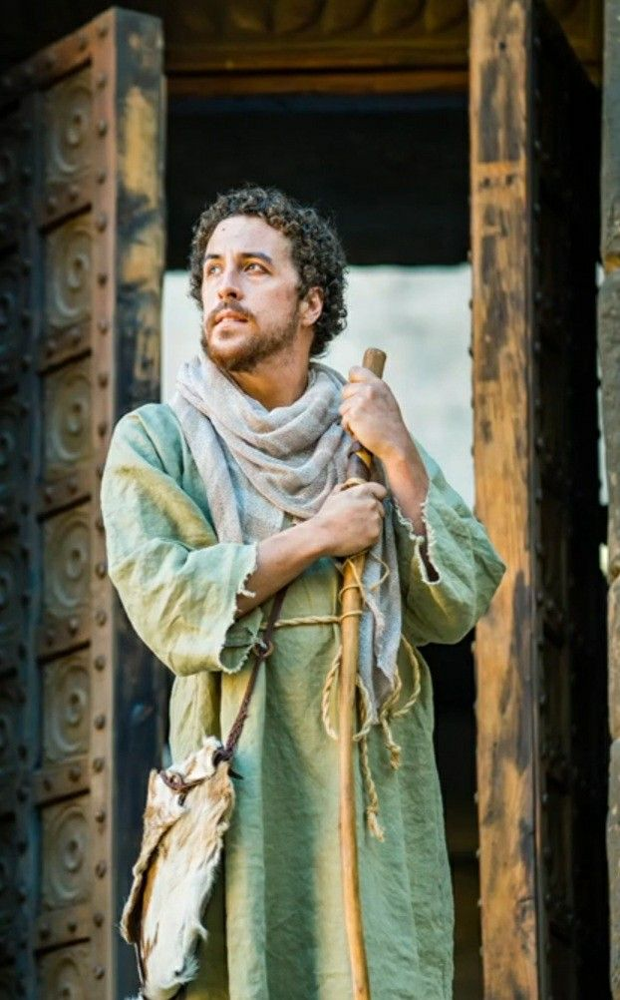
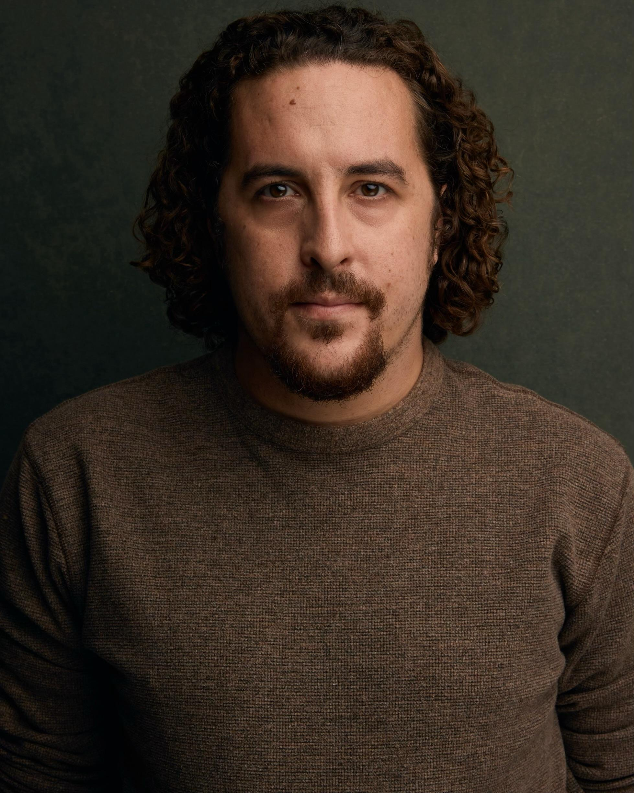
Reservado e humilde. Na série, é retratado com uma deficiência física, mas com grande fé.
Personagem: Judas Tadeu
Ator: Giavani Cairo
Idade: 33 anos
Nacionalidade: Norte Americano
Descrição: Giavani Cairo nasceu o 26 de junho de 1991 em Michigan, EUA. É ator, conhecido pelo seu trabalho em Os Escolhidos (2017), 9-1-1: Lone Star (2020) e Patrulha do Destino (2019).
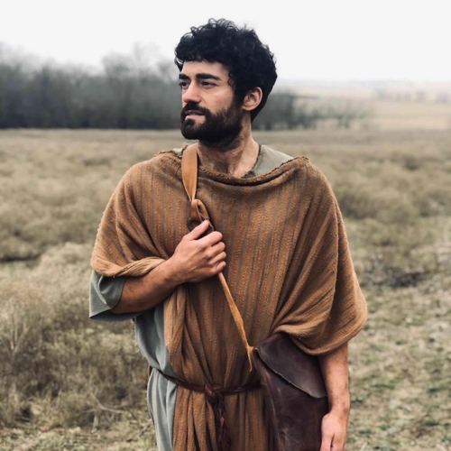
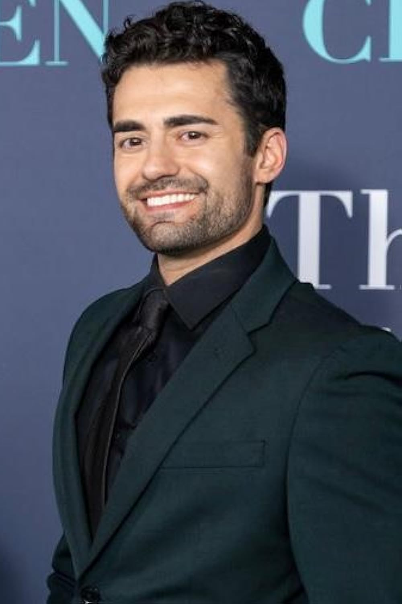
Gentil e compassivo, com grande habilidade como artesão.
Personagem: Tomé
Ator: Joey Vahedi
Idade: 32 anos
Nacionalidade: Norte Americano
Descrição: Joey Vahedi nasceu em Los Angeles, Califórnia, EUA. É ator e autor, conhecido pelo seu trabalho em Os Escolhidos (2017), Lúcifer (2016) e I Think You Should Leave with Tim Robinson - Um Show de Comédia (2019).
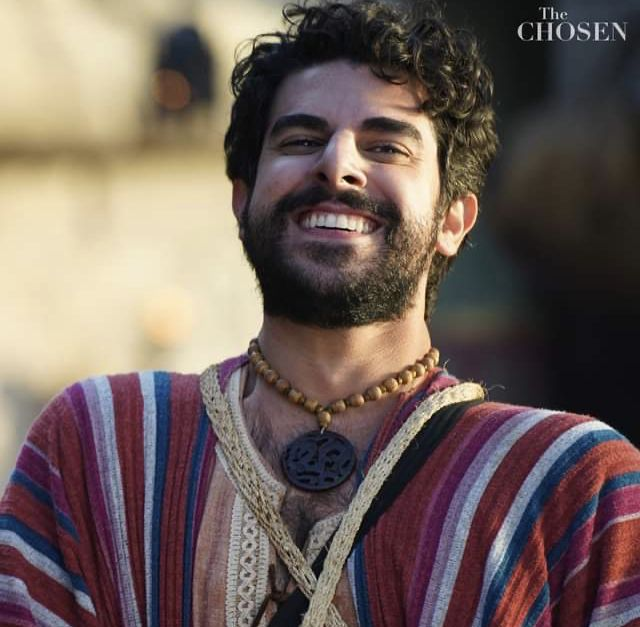
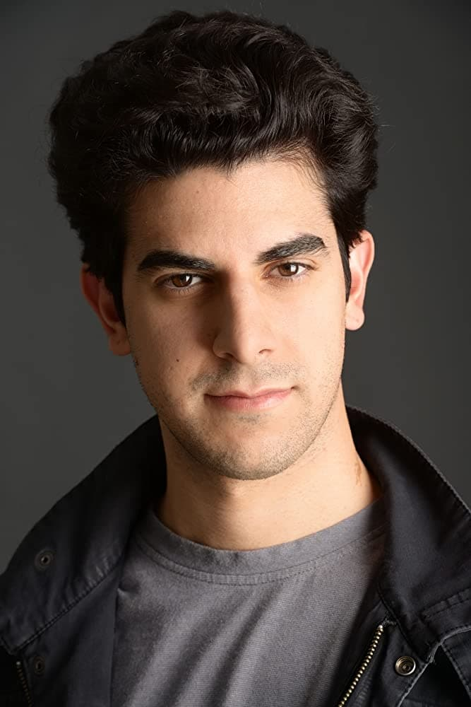
Na série, é um bom planejador e cozinheiro, mas luta com dúvidas e inseguranças.
Personagem: Filipe
Ator: Yoshi Barrigas
Idade: 35 anos
Nacionalidade: Norte Americano
Descrição: Yoshi Barrigas nasceu o 25 de agosto de 1989 em Massachusetts, EUA. É ator e diretor, conhecido pelo seu trabalho em Os Escolhidos (2017), Forty-Seven Days with Jesus (2024) e.
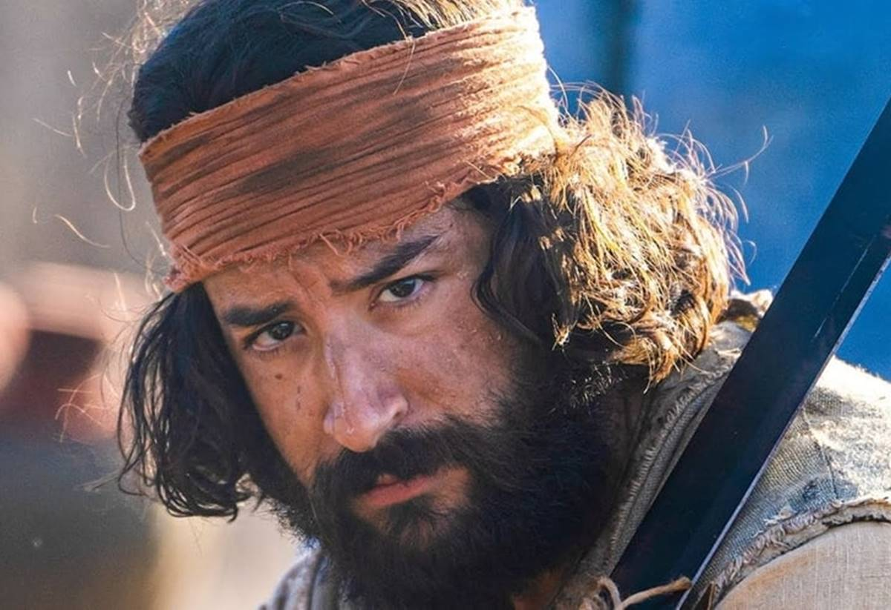
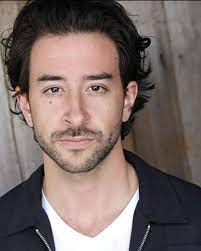
Alegre, espontâneo e acolhedor. Foi mentor de Natanael. Ajuda outros a se aproximarem de Jesus.
Personagem: Natanael
Ator: Austin Reed Alleman
Idade: 31 anos
Nacionalidade: Norte Americano
Descrição: É um ator e músico de New York. Ele é original de New Orleans, Louisiana. Ele se formou pela Academia Profissional de Treinamento de Atores em New York.
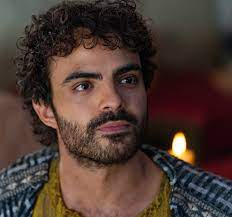
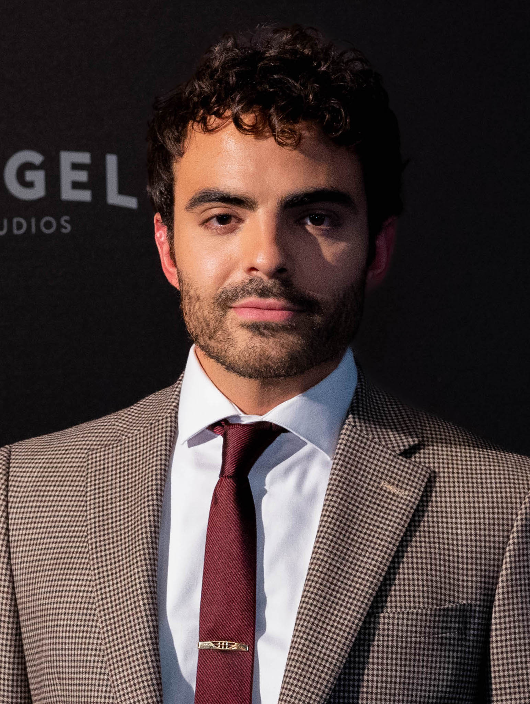
Cético no início, mas se torna um discípulo fiel. Arquiteto de profissão, busca propósito em sua vida.
Personagem: Simão Zelote
Ator: Alaa Safi
Idade: 40 anos
Nacionalidade: Francês
Descrição: Alaa Safi nasceu em Paris, França. É ator e diretor, conhecido pelo seu trabalho em Indiana Jones e a Relíquia do Destino (2023), O Mauritano (2021) e Os Escolhidos (2017). É casado com Elena Borgogni desde o 20 de agosto de 2016.
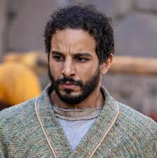
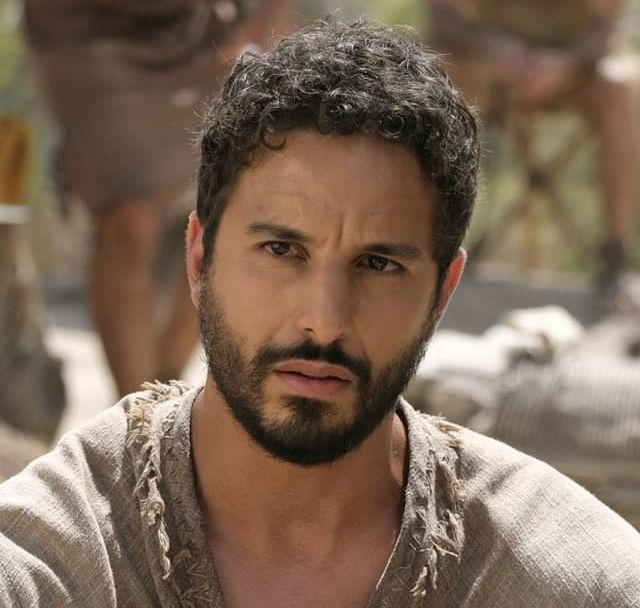
Ex-revolucionário com habilidades de combate. Aprende a abandonar a violência ao seguir Jesus.
Personagem: Judas Iscariotes
Ator: Luke Dimyan
Idade: 28 anos
Nacionalidade: Norte Americano
Descrição: Luke Dimyan nasceu o 18 de setembro de 1996 em Torrance, Califórnia, EUA. É ator e autor, conhecido pelo seu trabalho em Os Escolhidos (2017), Home Invasion (2021) e Better Things (2016)
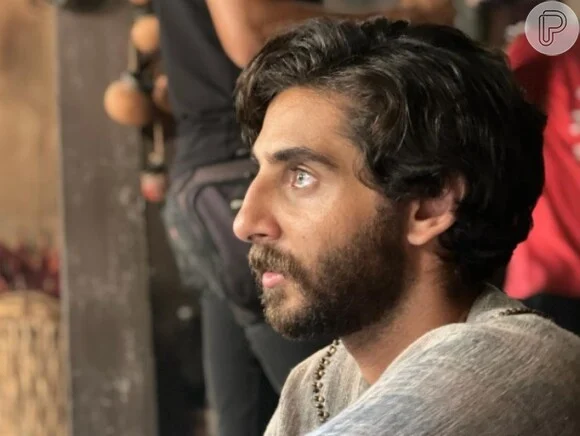
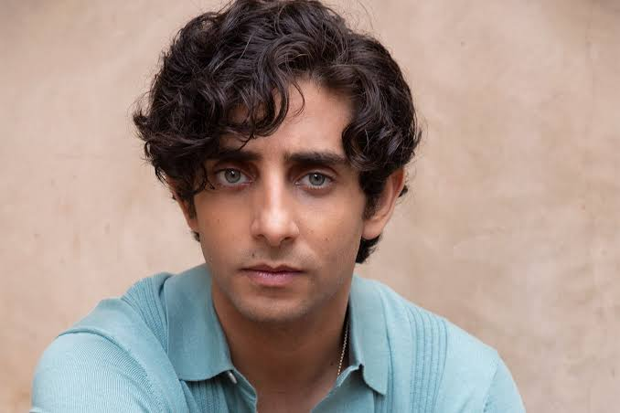
Foi o homem que traiu Jesus com um beijo.